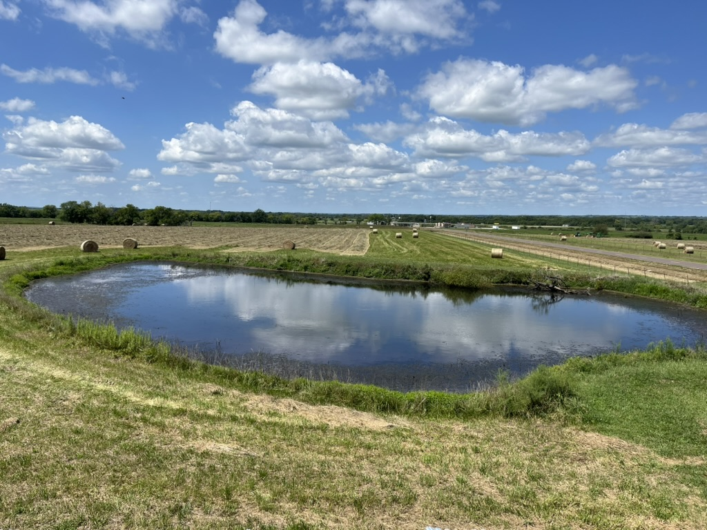

Understanding Algae Growth in Kansas Farm Ponds
Algae blooms are one of the most common — and most misunderstood — challenges on Kansas farms. Learn what's really driving that green water, which types are harmless and which are dangerous, and what you can do about it without breaking the bank.

📷 Photos by John Sutherland — High Linn Farms Prescott property pond dredging project
Why Do Farm Ponds Get Algae?
Algae growth in farm ponds is driven primarily by excess nutrients — especially phosphorus and nitrogen — combined with warm temperatures and sunlight. Runoff from fertilized fields, livestock waste near the water's edge, and decomposing organic matter on the pond bottom all contribute to nutrient loading. Once nutrients reach a tipping point, algae populations can explode seemingly overnight.
Kansas summers are practically ideal for algae: warm shallow water, long sunny days, and limited wind mixing in smaller ponds. The result is the bright green "pea soup" appearance many landowners know well.
Types of Algae — and Why It Matters
Not all algae are created equal. The most common types you'll encounter in Kansas ponds include:
- Filamentous (string) algae — forms green mats that float or cling to the bottom. Unsightly but generally not toxic.
- Planktonic algae — microscopic, turns water green or brown. Can include harmless green algae or dangerous cyanobacteria.
- Blue-green algae (cyanobacteria) — this is the one to watch. Certain species produce toxins that can kill livestock, dogs, and fish. It often appears as a blue-green or olive scum concentrated on the downwind shore.
If your pond smells musty or like rotting plants, and you see a surface scum that looks like spilled paint or thick pea soup, treat it as potentially toxic until confirmed otherwise. Keep livestock and pets away.
Management Options
There's no single fix for pond algae, but a combination of approaches works well for most Kansas farm ponds:
- Reduce nutrient inputs — fence livestock out of the pond and direct runoff away from the water's edge. This is the most impactful long-term step.
- Aeration — a bottom diffuser or surface aerator improves oxygen levels, discourages cyanobacteria, and helps the pond self-clean. Most cost-effective option for actively managed ponds.
- Copper sulfate — a traditional treatment for green water. Effective but must be applied carefully; overuse can crash oxygen levels and kill fish. Always follow label rates based on pond volume.
- Biological controls — grass carp can control submerged vegetation (which competes with algae for nutrients), but require a Kansas permit. Barley straw is a slower natural option sometimes used in smaller ponds.
- Dredging — when nutrient-rich sediment has built up on the bottom over decades, dredging removes the internal nutrient source. It's a significant investment but can reset a pond's health for many years.
When to Call for Help
If you're dealing with repeated toxic algae blooms, fish kills, or a pond that hasn't responded to treatment, it may be time to bring in a professional. K-State Research & Extension offers pond management resources and can connect you with local specialists. The Kansas Department of Health and Environment (KDHE) can also test water samples when toxic algae is suspected.
📢 A Note from the Property — Fill Dirt
The dredging project at our Prescott pond left a sizable mound of fill dirt in the adjacent field — larger than a two-car garage. Contact me if you have an interest in fill dirt. Happy to talk through what's available and how to haul it. See the Contact page to get in touch.